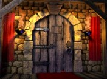
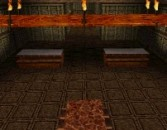
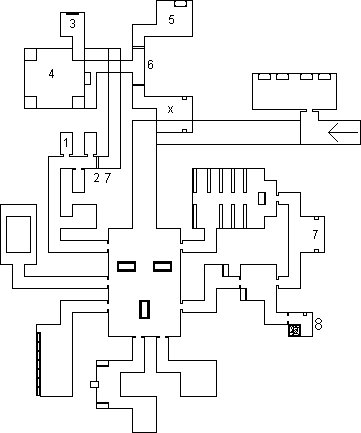

| 1 | Prisoner, he tells about secret passage |
| 2 | Secret Door |
| 3 | Room with a switch, switch activates stairs in room next to it. |
| 4 | Stairs will come out of the wall, keep walking and you will reach the top of an elevator. |
| 5 | Melody Silver (Damsel in Distress quest item :). |
| 6 | Stone picture will teleport you back down to the switch (#3.). |
| 7 | Gharik's Laboratory Key for Gharik's Forge |
| 8 | The switch on the wall will open the secret door to get into room at #7 |
Local Enemies | ||
| Color | HP's | Type |
| Captain | 207 | Pretty much all magics work well against these guy's, there is no one that works best. |
| Lieutenant | 93 | |
| Guard | 45 | |
| Master Swordsman | 207 | Pretty much all magics work well against these guy's, there is no one that works best. |
| Lieutenant | 93 | |
| Swordsman | 40 | |
| Master Monk | 153 | Pretty much all magics work well against these guy's, there is no one that works best. |
| Initiate Monk | 73 | |
| Novice Monk | 30 | |
Leave us a message at: mgrounds@hotmail.com